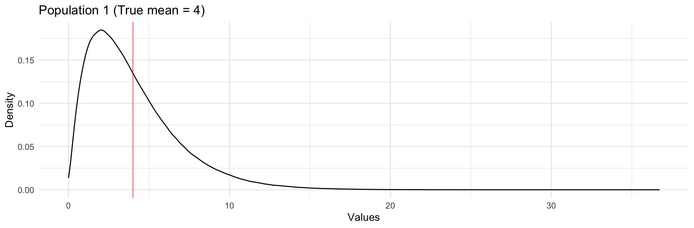
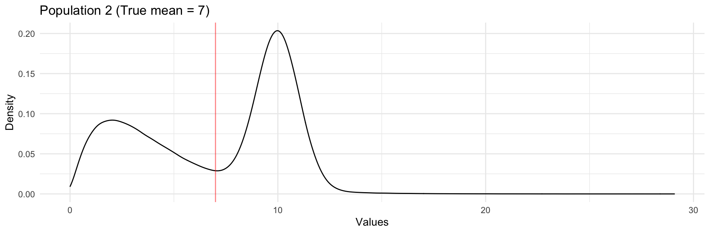

Topic 19 Central Limit Theorem
Learning Goals
- Use the Central Limit Theorem to construct confidence intervals
- Use confidence intervals to answer research questions
- Make quantitative predictions about how changing sample size
Discussion
In the video/slides, we saw

Exercises
A template RMarkdown document that you can start from is available here.
Exercise 1
We know from the Central Limit Theorem (CLT) that at large enough sample sizes (roughly \(n \geq 30\)):
\[ \hat\beta \sim N(\beta, \hbox{SE}^2) \]
- Given a property of the normal distribution, complete the following probability statement:
\[ P(\hbox{???} < \hat\beta < \hbox{???}) = 0.95 \]
- Rearrange the probability statement above so that it looks like:
\[ P(\hbox{something with } \hat\beta \hbox{ and } SE < \beta < \hbox{something with } \hat\beta \hbox{ and } SE ) = 0.95 \]
Explain how your work in (b) shows how we can use coefficient estimates and their standard errors to construct a 95% confidence interval.
Would a 68% confidence interval be narrower or wider than a 95% confidence interval? What about a 99.7% confidence interval?
Note: Technically, in linear regression, the sampling distribution of the coefficients follows the T distribution, but at typical sample sizes where the CLT applies (\(n \geq 30\)), the T distribution is nearly indistinguishable from the normal distribution.
Exercise 2
Based on the CLT, we know that standard error has a certain relationship with sample size.
Suppose that I wanted the standard error of my estimate to be \(A\) times smaller. How would my sample size have to change to achieve this?
Interlude: Interpreting confidence intervals
Our work in Exercise 1 shows that we can create 95% confidence intervals with:
\[ \hbox{estimate} \pm 2\times\hbox{std. error} \]
That is, we can interpret the probability statement below:
\[ P\left(\hat\beta-2SE < \beta < \hat\beta+2SE \right) = 0.95 \]
as saying: the probability that a 95% confidence interval from a random sample contains the true population value is 95%.
- The correct interpretation:
95% of all possible samples will produce 95% CI’s that cover the true value. The other 5% are based on unlucky samples that produce unusually low or high estimates. - The INCORRECT interpretation:
We cannot say that “there’s a 95% chance that the true population value is in the 95% CI from this particular sample.” Technically, the population value is either in the interval or it’s not, so the probability is simply 1 or 0.
e.g., If the true population value is \(\beta = 1\), and my CI is (2,4), there is a 0% probability that the truth is in my interval. If my CI were (0.5,3.5), there is a 100% probability that the truth is in this interval.
Note that this also applies to bootstrap confidence intervals, and 95% is called the coverage probability or confidence level.
Exercise 3
In addition to using the reported estimate and standard error from our model output, we can use a handy function in R called confint() to compute confidence intervals.
If we fit a model called mod, we can use confint(mod, level = 0.95) to obtain 95% confidence intervals.
We’ll practice with a dataset containing information on house prices in upstate New York.
library(readr)
library(dplyr)
library(ggplot2)
homes <- read_tsv("http://sites.williams.edu/rdeveaux/files/2014/09/Saratoga.txt")
# Create an indicator of whether or not a house has a fireplace
homes <- homes %>%
mutate(HasFireplace = Fireplaces > 0)Do we have evidence for a real, meaningful effect of square footage (
Living.Area) onPricefor houses with a fixedAge? A meaningful effect is at least 10 dollars per square foot. Interpret the relevant coefficient, and provide a 99% confidence interval to support your answer.Does your confidence interval contain the true population value of the relevant regression coefficient?
Repeat parts (a) and (b) for the research question: Do we have evidence for a real, meaningful effect of
Ageon the chance of a home having a fireplace at fixed square footages? A meaningful effect is one with an odds ratio of at least 1.1 if the effect is positive or at most 0.9 is negative.